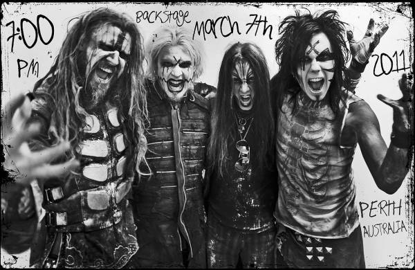

Industrial Metal
Influences
Although Industrial artists have been using distorted guitars for quite some time, Industrial Metal was really pioneered by British Post-Punk band, Killing Joke, who began to combine Industrial lines with heavy metal song structure, lyrics and instrumentation.
Description
Industrial Metal is a fusion of Heavy Metal and Industrial music. Industrial Metal typically uses repeating distorted guitar riffs, melodic synthesizer lines, synth pads to provide backing harmony and distorted vocal techniques such as growls and shouts.
Industrial Metal is also very diverse in that it has fused with several different extreme metal subgenres, leading to industrial representing sounds from thrash to death to black.
Brief History
After experimentation throughout the 80s, Industrial Metal began to cement itself as it's own unique genre in the early 90s with bands such as K
Examples
- Ministry
- Godflesh
- KMFDM
- Rammstein
- Nine Inch Nails
- Rob Zombie
- Marilyn Manson
- Fear Factory
- Static-X
- Strapping Young Lad
Subgenres and Regional Scenes
Major Subgenres
Neue Deutsche Härte, meaning "New German Hardness", combines Industrial Metal with the sensabilities of Groove Metal and Alternative Metal. This includes bands like Rammstein and Oomph!